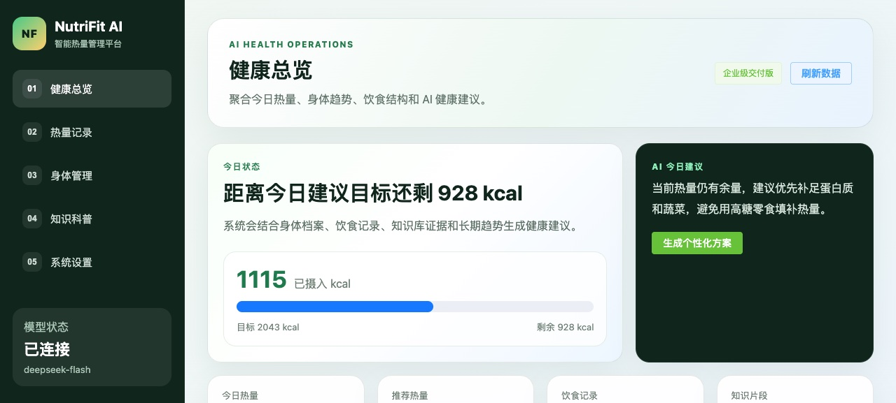
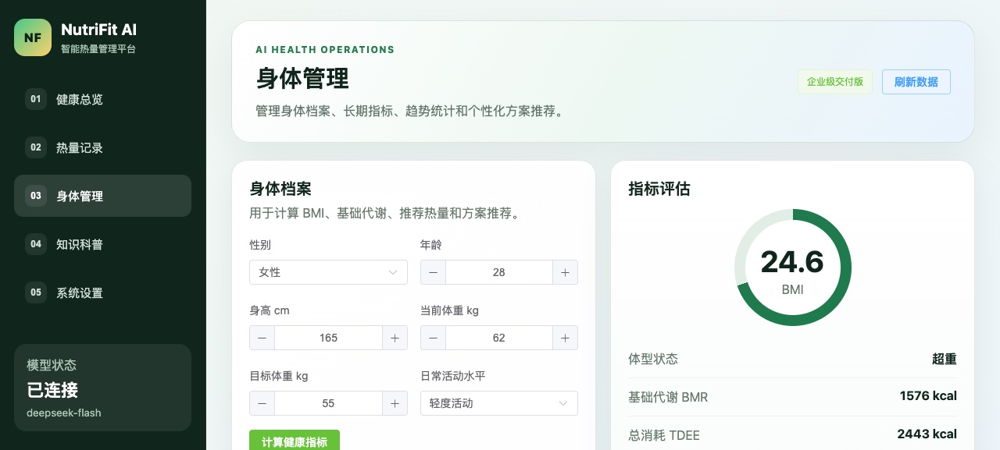
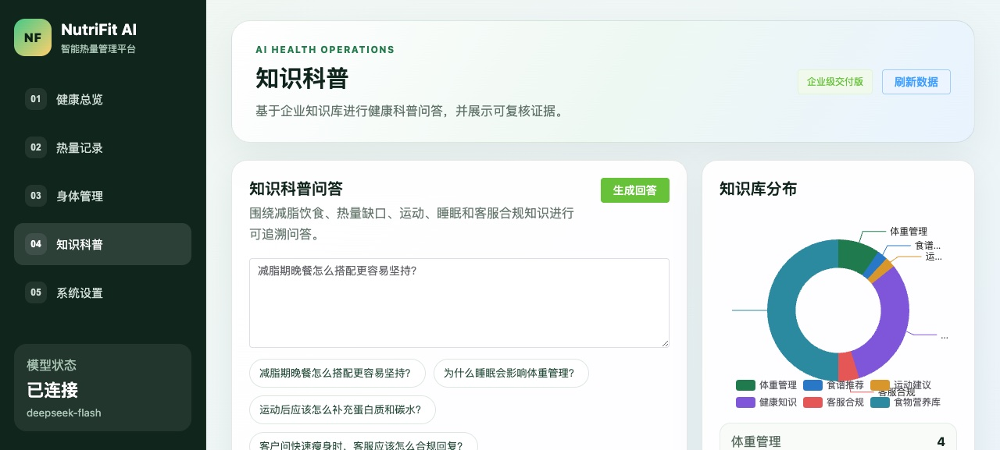
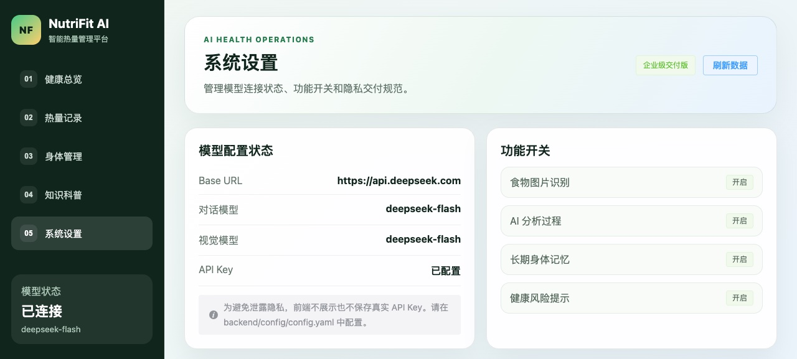

2026 · AI 应用 / 健康
NutriFit AI
体重管理最难的不是「知道该少吃」，而是「不知道今天到底吃了多少」。这个项目把这件事变简单：拍一张，或者手填一行。
先算基础代谢和推荐热量区间，再用饮食记录把「今天吃了多少」变成数字，最后用带引用来源的问答回答「减脂期晚餐怎么搭配」这类问题。
这是做什么的
给轻食品牌和体重管理场景做的营养顾问。五个模块分别对应五件事：看总体状态、记吃了什么、管理身体档案、查营养知识、调系统。
实际长什么样





为什么这样设计
-
01
识别和手填两条路并存
拍照识别是「少做一步」，不是「不用做」。模型对一份宫保鸡丁给出的是估算值，用户看得见、改得动，记录才有意义。所以手填入口一直没去掉。
-
02
检索用 0.65 / 0.35 的加权融合
营养库里大量是「鸡胸肉 100g 多少蛋白质」这种精确取值，纯向量检索给不出稳定信号。所以向量和关键词两路都走，按 0.65 与 0.35 加权合并，再限制同一份文档最多取两段，避免一段话占满整个上下文。
-
03
答案必须能指回原文
营养建议这件事，说错了是有代价的。所以每条回答都挂引用片段，让人能自己核对到原文；这比让答案听起来专业重要得多。
边界与还没做完的
食物识别的热量和份量都是估算。同一道菜不同做法差距很大，这里的数字只能用来做趋势参考，不能当成精确摄入。
页面上的营养建议属于科普信息，不是医学诊断，也不替代营养师或医生的意见。
向量是用字符 n-gram 哈希算的，不是神经 embedding。这是个明确的欠账，也正是我把关键词那一路保留 35% 权重的实际原因。